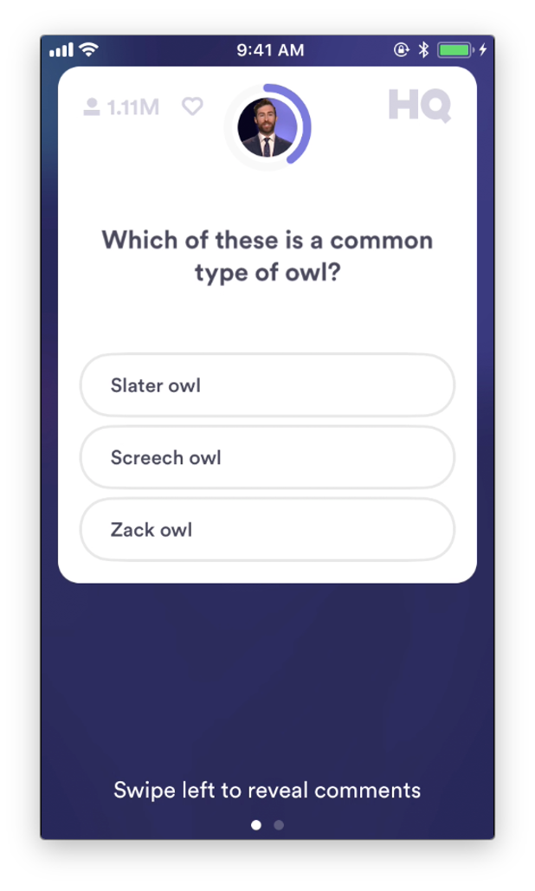
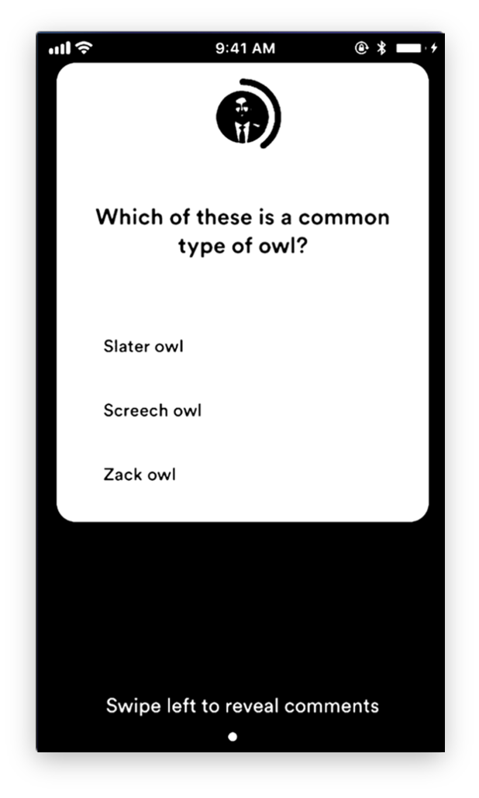
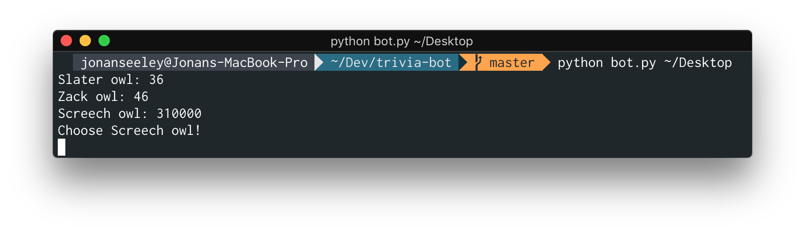

Disclaimer: this script hasn't been used during a game of HQ Trivia, as doing so would be against HQ Trivia TOS.
If you've never heard of it, HQ Trivia is a mobile app that functions as a daily game show of 12 questions with 3 answer choices each. The 12 questions appear on the users screen along with the three answer choices and the player has 10 seconds to answer the question.
The questions start out absurdly easy, and unless you make a silly mistake, it's normally fairly trivial to make it to the 4th question. At that point, the questions begin to get a bit more tricky and actually start testing some trivia-style knowledge. Towards the final rounds, the questions get truly difficult and many people turn to typing out the questions as fast as possible in a search bar in an attempt to be one of the winners to split the prize at the end of the game.
However, 10 seconds isn't much time to write out a question, scan the search results for the correct answer, and tap the answer on your screen. This got me thinking about writing a script that would find the answers to HQ Trivia questions.
I thought about writing the script such that it would first make a search with the question as the query and then search through the results to find the frequencies of each of the answers in the results. However, I realized that it would probably be easier to make separate queries with each of the answers and then look at the number of results Google returned as a form of a "confidence level."
I then started writing the part of the script that would process the text from the HQ Trivia screenshots ao that I could build the queries I would make to Google. While Google's Cloud Vision API is wonderful and leagues ahead of anything else I could find, it's a paid resource and I didn't care to set up a trial account for something I wasn't going to be using long-term.
Instead, I opted to use Tesseract, an open-source OCR Engine. As I would soon find out, the recognition prvided by Tesseract isn't the best, but one can't complain for open-source software. Either way, Tesseract has a very convenient interface for python called pytesseract. However, to get Tesseract to recognize the text in the images with any sort of regularity, a fair amount of preprocessing was required.
 With this preprocessing (and a bit of cropping), Tesseract is able to fairly consistenly recognize the question text and answer text. My script would then build the appropriate Google queries, make the searches, and compile the results. Since this isn't meant to directly act as a bot (despite the name I gave it), the user would have to manually input the answer after the program gave it to them.
It might seem irresponsible to release the source code to this project considering that other people using it would likely be using it for cheating. However, there are a few bugs with the current version of the google module I used that needed to be fixed before the script would work. Additionally, the team behind HQ Trivia is clearly aware about potential hackers, so they've disabled screen mirroring on recent versions of the app. Since that's pretty much the only way someone would be able to get images with enough quality for the script to work, it's practically worthless.
Not to mention that finding answers with this method is far from infalliable, as demonstrated with this example. (The correct answer in this case is "safer milk," a la Louis Pasteur).